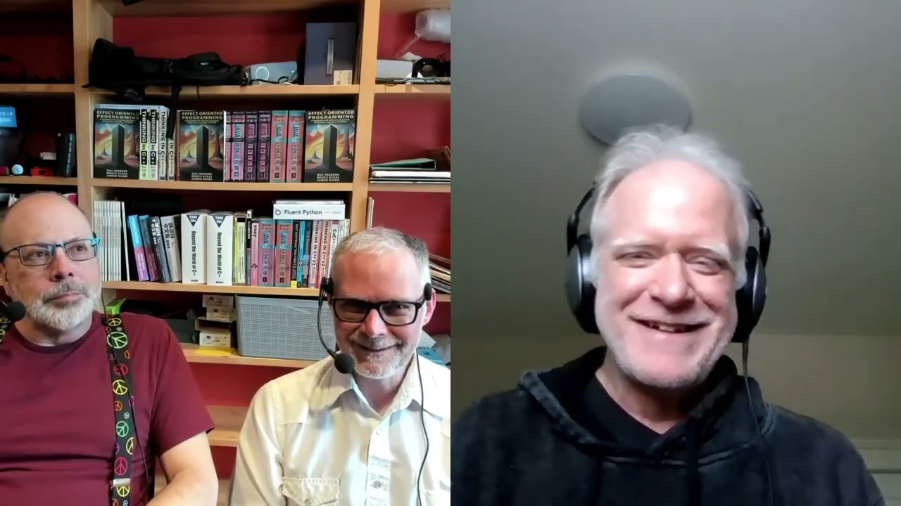

FP Reaches the Masses with Paul Snively

About this episode
We chat with Paul Snively about how Functional Programming has gone mainstream.
Resources & links
- Paul Snively
- Winter Tech Forum
- Paul Snively's LambdaConf Talk on Verse
- Paul Snively's Blog Post on the Verse Calculus
- Eugenio Moggi, "Notions of Computation and Monads" (1991)
- "Implementing Lazy Functional Languages on Stock Hardware: The Spineless Tagless G-machine" by Simon Peyton Jones
- The Verse Calculus Paper
- "How to Solve It" by George Pólya
- Fidelity Framework
- Happy Path Programming Episode #37 from Aug 14, 2021 "The Future of Everything with Paul Snively"
Transcript
Generated automatically by Spotify, so expect the odd misheard word. Select a timestamp to play from there. Download (.srt)
Read the transcript
0:01 Welcome. To. Happy path programming. I'm Bruce Eckel. I'm James Ward. All right. Welcome to Happy Path Programming. It's a beautiful snowy day here in Crested Butte. We have a wonderful guest back on Paul Snively, who's always a pleasure to learn from and we had you on 4 1/2 years ago. But before we dive into that, Winter Tech Forum is coming up and it's the first week of March in here in Crested Butte. It is, yeah. Looks like there's going to be a nice turn out. And we're, we're going to, as usual, do some new experiments, you know, small tweaks. Yeah. Testing out new ideas. And we have a bunch. We have 10 students and two professors who are coming from the university down the street.
0:51 And then a lot of the, a lot of the folks usually show up, few new folks, you know, like that. So it's going to be great. Winter Tech forum.com. You can sign up now and consider it. It's a, you know, it's an adventure because you come up to Crested Butte, There's all that stuff. And skiing. And, yeah, biking if you want. And yeah. There's all kinds of ice. Skating and snowmobiles and just yeah, yeah, something for everyone. There's all kinds of things to do and we everybody seems to always have a super good time. So yeah, it's, it's unique among conferences. I think we can safely say yeah, yeah. So. Good. Well, I hope to see you all here, Paul. So we had you on 4 1/2 years ago and the the title of the episode was What the Future of Everything? Or something little ambitious.
1:45 Yeah, little ambitious. No pressure. Yeah. And you've, you've on social media in many conversations referenced that episode and said like my, my thoughts have been on this topic have been stated in this episode. And so thank you for continually pointing people to that. I think we covered a lot of ground. We did. You guys were very patient and generous with your time. Yeah and I don't you said you re listened to that episode, which I should have done, but but did we get anything right? Like did we in that episode we talked about the future of software development and AI wasn't even on the scene then that's. Right. The world's changed a little bit. So there's yeah. So one way to look at that is, is there's a miss, right? I mean, if, if you just want to look at it at the 50,000 foot level, but there were there were two things that we touched on then that have definitely evolved. And, and so, yeah, if you want to look back at those one, one came out of a question that that you asked. And, and I think it was in response, if I remember correctly, to something I was saying about, about the work that that Tim Sweeney has done and is doing with respect to designing languages, which is something that I think a lot of people might not expect from the CEO of a game company. And at the time I said, you know, he's, he's got to reduce support costs because he has all these sublicensees, including sublicensees like Microsoft and Sony who have their licensees, right?
3:26 So we're talking about 10s, if not hundreds of thousands of, of developers that are, that are using the Unreal technology, the Unreal Engine in one form or another. And, and I remember saying he invented a dependently typed programming language that never saw the light of day called Linda Elif. And, and he, and I think the reason for that, this is just my opinion. I think the reason for that is just he's keenly aware of how if he releases the wrong thing, he's going to be swamped by support costs. You know he can't ship something that is hard to use and. Now we balance the the middle ground of where many developers are with the ideals of what would sure be nice in a language.
4:15 Right. And then we are foreign experiment. When you're in a situation like that. Very, yeah, very. But you know, Tim guards his time jealously I would say. And so he's been successful in running those experiments to the point where Epic now has a new programming language, which has the a beta version of it has been in 10s or hundreds of thousands of users hands in the Unreal editor for Fortnite called Verse. And the version that's in the Unreal editor for Fortnite is called Betaverse. It's not the full language. But if if you look at all the published materials and presentations and so forth on it, looking back at at our conversation 4 1/2 years ago, I said, wouldn't it be funny if the future of easy to use programming was some dynamically typed or sorry, dependently typed programming language and, and here comes a verse.
5:08 So the full version of the language is not available yet. They are going to release a reference implementation when it's ready. They have the luxury of deciding when it's ready. That's not out yet, but you know, they also have the power. They hired Simon Peyton Jones away from Microsoft Research to work on this and and Leonard Augustson and Owen Shivers. And I think I'm getting, I'm remembering his name correctly. Anyway, there's this big who's who of people working on this project and have been for several years. So there there's maybe a common assumption that a dependently typed language would be far too complex or complicated. I don't know which one for for the masses to use and we're talking about right?
5:58 You know, not we're talking about like my kids, like my kids want to build a Fortnite, you know, plug in or whatever. Yeah, absolutely. Like could could my 8 year old son understand a dependently typed language and that that seems impossible. But what I think what you're saying is that they maybe figured it out. Yeah, yeah. And and can you even call Verse a dependently typed language in the sense that Idris is or Agda is or what are some of the others F star, you know, and and on one hand, there's a sense in which the answer is yes, and there's another sense in which the answer is no, because versus type system is not at all conventional to the extent it even has a type system. And and and there you go.
6:46 So if I may toot my own horn, I did a presentation on verse at Lambda Conf this year. So, you know, I'll have to watch that. Yeah, I'll check, check that. Out. When you're really, really bored and, and, and have an hour and a half to spare, Actually an hour, 50 minutes, I think. But anyway, yeah, so looking back at our last conversation, I think there's at least one shot coming at the idea of some of the really high end power that we can get in certain classes of programming languages becoming available in the mainstream. And it's hard to imagine something more mainstream than the programming language that supports the Unreal Engine. You know, that's that's literally as mainstream as it gets Here we and and here we are, people are writing, people are writing verse code today.
7:38 It's just not with the full. It's a logic functional language. And that's another thing that your question last time James in particular was boy, what's going on with declarative programming. That was one of the. Diving into that. And so here we are. We're talking about a logic functional language. So we're talking about a language whose closest relatives are Mercury and Curry. Yeah. So I think there was some last when we talked, there was some hope that the, the things that we believe are better ways to program would propagate to the masses. And, and so I, I think the, the recap of the update here is that, yes, it's happening in versus one place where we're seeing this happen that, that some of these approaches to how we can get to better software reaching the mainstream is happening. And the effect TypeScript library has I think been another case of that where effects are going much more mainstream through that Ave. than than they kind of ever did with with Scala and you know, their languages that support effects. Yeah.
8:50 Or anywhere else, right? Yeah, yeah, yeah, for sure. And I think that's an interesting trajectory and I'm glad you brought it up because we, we can even talk about who the connective tissue is there, right? Some people might not know the history, but effects TS is literally a port of Zeo from Scala to TypeScript. And, and when we talked last time, I remember saying, and, and I watched it again, or I should say, listened again yesterday. I, I talked quite a bit about how I was skeptical of Zeo because it issued higher kind of types and type classes. And you know, these things that scholar really has, in my opinion, certainly to offer by way of writing those kinds of libraries.
9:37 And, and then here comes effect TS TypeScript doesn't have higher kind of types. TypeScript has no more native type class support than Scala did. So you have to encode these things. And it makes more sense to me because, you know, my question to, to John Dego's historically was why would you avoid these features in Scala that are, you know, quite powerful? Granted, they cause certain kinds of challenges. And OK, so if you're trying to appeal to newcomers, maybe that's a good enough reason. Well, then you take that rationale and you bring it to TypeScript and it's like, OK, this makes perfect sense to to me. And so yes, here you are. The message that was always part of ZEA from a from a marketing perspective at least, has proven itself very, very effectively with with effect in TypeScript.
10:34 People are falling all over themselves to use Effect in in TypeScript. People who never ever ever ever would have considered using a cats or a Cats effect or a Haskell or whatever. And and people not even coming from a functional programming background. That's why I say don't tell, yeah. Yeah, yeah, exactly. Like we've somehow tricked people into doing functional programming. Right. But but I think that's how it's going to go. And the same thing applies to verse. One of the points I make in my presentation on verse not to keep making the commercial about that is that part of its selling point is the syntax is derived from C# and Ecmascript. It it it is. So it's bog standard almost in terms of its yeah, mouth, mouth feel. I think I think that's that's really important. Like I, I really like a lot of the ideas in unison and in rock, but the fact that they chose the Haskell eve like syntax, not the what's the, what's the foundation of of the language Algal, algal, algal.
11:44 Yeah, yeah, I, I, I just like that syntax more. And I'm sure it's just, you know, that's what I'm familiar with. Well. Yeah. And I think we go, oh, it's just because you're familiar with it. And yet that's a bigger factor, clearly. Yeah, we want to admit. It's a. That's the. That's the place I've very uncomfortably landed over the last couple of years. In particular, it's it's syntax is not only important, it's very nearly dispositive. Sorry, what dispositive? Yes, sorry, legal term. What does that mean? I don't know this word. So the road is disposed, right? So you can dispose of an argument. So dispositive is, you know, closes the book on the conversation basically.
12:33 Huh. OK. Yeah, that that could be, could be. Worse. Like yeah, syntax is dispositive. Yeah, almost. Yeah, I mean it is generally most new languages that are coming out are using Algol like syntax. And so it becomes like this reinforcement loop where that increases familiarity, which then causes more new languages to make that decision and and so. And then your question for people like us who are interested in weird languages is, does familiarity breed contempt? You know, have, have we now spent decades looking down our noses at these languages with these sort of not very interesting syntaxes? You know, and and it's like, well, should the syntax be the most interesting? Thing yeah, should the.
13:19 Syntax. Be interesting at all, because then you're running into. Yeah, yeah, right. And and so we have the, we have the newbie onboarding problem. Not to be pejorative in saying newbie, I don't mean to make that a value judgement. So how do you appeal to people who are new to programming and give them the leverage that you want everyone to have? And I and I think those of us who are interested in exotic languages are, are sincere in our desire to give other developers the power that that we appreciate about these weird languages. And, and certainly that's why I talk about them in public. Otherwise I wouldn't, you know, I can't think of another reason why I would do it other than, I suppose self aggrandizement.
14:07 And I hope I'm not that guy. But yeah, I, I, I do think we've, we've worn the hair shirt and here I'm ripping off Simon Peyton Jones again, as usual. But we've we've worn the hair shirt of oh, this syntax is weird. And the payoff is you get these really interesting and useful and fun semantics you know on on the other side. But does the syntax have to be weird to give a payoff? Right, right. And and versus answer to that question is absolutely not. And and that's why it's interesting to me. It's, it's like, OK, this deeply challenges some assumptions that I had made for decades about the that relationship, about the relationship between syntax and semantics. And it's like, oh holy cow.
14:58 If, if, if this succeeds at all, it will change everything. You know, it really will. Yeah, I, I really like that concept of leverage and it's not something that I'd really thought about before, but the idea that what we're doing as programmers is we're able to, to leverage technology to accomplish things. And there are different technologies that give us more leverage than others. And the maybe the stronger, the, the more capable of programming languages is, is potentially giving us more leverage. And I, I really like that idea. And AI is certainly giving us, you know, even more leverage. But ultimately, like, it's like how how much work do we have to do to accomplish a given goal?
15:56 And that that is what the leverage is, right? Is there other pieces to that? Yeah, probably we're not there yet in my experience with with AI, but but we're, you know, it's right now it's the California gold rush all over again, the people making money or selling picks and pans and troubles, right? And and that's, that's as it has to be at this stage where that's where your innovation budget has to go at this stage, right? It's it's still early days. Here's here's a funny story that just happened very recently. So I've been experimenting with local models like I think, you know, most developers have. And I have a an RTX 4060 in this laptop. Nice.
16:44 So yeah, it's not a bad chip. It's 8.9 compute power. When when you ask about CUDA compute power and if you Google that, it's like, oh, very good. You know, it talks about how how great that. That crunch a lot of math on that thing. You can crunch a lot of, yeah, you can do a lot of linear algebra with that kind of compute, but with 8 gig of VRAM, you know it, it's, it's all about the memory bus bandwidth and and, you know, access. To the. You can't load a very large model into. That not at all. Space, yeah. And, and so now it gets interesting because now we have to talk about dense versus sparse Moe models and all that kind of stuff. And we can talk about that in a minute. But the story I want to tell is here's how here's how fast moving things are. The proprietary NVIDIA driver for Linux does not support unified memory architecture, but their open source Linux driver does.
17:39 So I installed the open source NVIDIA driver on my Linux box here and there's a tool called envy top by analogy to H top right? And it shows you all this nice information about, you know, where, where your GP, you know, your level of GPU consumption and, and your level of GPU memory consumption and all that kind of stuff. And it lied to me. At one point I disabled the unified memory architecture, but was still using this driver. And I pulled up NV top and it was like, hey, you've got 16 gigabytes of VRAM. And I'm like, no, I don't, I've got an RTX 4060. You are lying to me. And then I did some Googling and come to find out that this was a known bug in NV Top and the fix? They fixed that bug in Envy Top and the release with that bug fix happened Tuesday of this week. OK, so you just happened to encounter this odd bug and yeah, that's that's fascinating that that, you know, in something kind of low level obscure, if there's enough users, we can figure it out and find it and figure it out and get it. That's the good news.
18:52 That's that's the positive side of it, right? That's all this is hopefully converging very rapidly. But then I mean, again, where do we put our innovation budget? So if if you're playing with local models, you know a few things, right? There's LM Studio, there's Llama CPP that you can run on its own. There's a VLLM, there's a llama so so first of all, you have a number of possible runtime environments. You have a number of possible tools that you can use to run these models and then they're in the models themselves, right? And if you go on hugging face, there are thousands and thousands and thousands of them. And if you. First narrow that what millions of models now on Hugging Face like it's. Absolutely no idea. I think it's in. I think it's in the millions. It's.
19:38 Yeah, it probably is. But even if you just go with the, you know, the obvious 10 or 12 that people talk about is still 10 or 12 that people talk about. And then Yep, yeah, and, and Mistral and and Nematron. So, and when you look at these and try to use them in one of these run times, you find out a couple of things. First of all, the the engines and the models are tightly coupled. If you look at the change list for llama dot CPP, which by the way is the back end for LM Studio too, so it's, you know, it's kind of omnipresent almost. If you look at the change list for for llama dot CPP, there were five tagged releases on GitHub yesterday, 5 tagged releases. Why?
20:26 Because GLM 4.7 flash dropped, so they had to revise LAMA CPP to support GLM 4.7 flash, that's why. Coupling. Yeah, right. And then there's, oh, right. And then you look at unclothed models on Hugging Face and it constantly says, oh, we fixed the chat template on this model. And it's like, what do you mean you fixed the chat template? Well, it turns out that these engines implement some template engine, typically Jinja, you know, Jinja too. So this is all about Python first of all, which which is its own sort of special, special snowflake of a problem. So you can have a model that the engine you're running the model with has to change in order to support, and separately or in conjunction you can have the chat template associated with that model not work with a particular engine. And it could even be whether it works in LM Studio and not in llama CPP like llama Server or vice versa even though LM Studio uses llama CPP for its engine.
21:37 It hits. I mean, it seems like some of our foundations here are a complete mess. Mira Sorvino stars in this film. Sorry, that's a Mimic reference. If you're, yeah, you Guillermo del Tormo, you have to go go watch Mimic. Watch the director's, watch the director's cut of of Mimic. It's, it's well, it's Guillermo del Tormo and Mira Sorvino and Jeremy Northam. And I mean, you know, yeah, go, go watch. But anyway, it's, it's this hodgepodge of things that have to talk to each other, but it's all predicated on the non determinism of the model. So, so even when, when you say, well, gosh, how hard can it be to parse a tool call? Well, ask the model because it's the model doing the parsing, you know, you so, so you don't have this nice.
22:25 It's like, oh, well, of course you use this Jason parser. Of course you use this XML parser. No, the model is actually parsing parsing this structured text and is supposed to make sense of it. Instead of a deterministic function call, it's it's actually just said, OK, this token sends me on this path and and yeah, yeah, while that all that stuff is just all encoded in this model. Yeah, we, we shovel, we shovel these XML tags or these Jason brackets or whatever to the model and then we hope that we get a valid piece of Jason or XML back which and maybe for the big frontier models online that that works. You know, that seems to work pretty well, right? It seems to work pretty.
23:13 Well, if you're very tuned to be able to manage. It's like, yes, we can. We do this pretty reliably. You might not even know that that this sort of interaction is going on, right? You might know that there's a thinking model versus an instruct model. You might not know what that means, right? But you know that there are those two broad classes of. Models. Is putting all this stuff in the model the only right way? Or like is there a better is there? Can we get to a better solution here that would be more deterministic? I, I mean, obviously, given my priors, right, given my prejudices, I think you know what the answer to that for me is, is going to be. And, and, and I'm not the only one. There are people who are doing things like including even bigger question kind of kind of thing. It's like, how do you validate?
24:06 So what does it even mean to validate the result of, you know, you're talking to a large language model. So there are people whose research involves integrating large language models with theorem provers like Lean that that seems to yeah, that seems to be a kind of a hot topic in certain circles right at the moment. So I do think there's an opportunity to have this kind of check your work, you know, kind of cross correlation kind of exercise between what you get out of a neural network and what you get out of a theorem proof. And and and this is. This is particularly interesting if you have any interest in algebraic information theory and information theory generally, I suppose, but particularly. What is the? Algorithmic rather. How do we, how is it?
24:53 Yeah, I think it is. My question is along those lines is in the world of like math and algebra, how do we reconcile models or how do we how do we connect models with with functions or operations? Yeah, right. Yeah. And, and I think, you know, we have to, we have to think harder about how to formalize the investigative process in mathematics and logic. And, and I think that it's, we, we sort of nodded at this through the 20 tens and, and into the 20 twenties a little bit by observing that deductive logic is, is almost nobody actually does deductive magic. It's, it's almost a common place in certain circles. It's like if you, there are entire books that have been written about, if you read Sherlock Holmes, Sherlock Holmes absolutely never uses deductive reasoning. He uses abductive reasoning or, or inductive reasoning and, or both.
25:54 And it's like, OK, yes. And, and then I'm looking over at my bookshelf right now and I've got how to solve it, Polia. And how to solve it is literally a mathematician's look at how you come up with something that you could possibly prove in the 1st place, you know, And it's not deductive. It's, it's very much inductive. And so I think there is room on the inductive abductive reasoning side of what we call math and logic to say, yeah, there there is, I think a role for LLMS here. There's a there's certainly a role for non determinism here. I mean, how to solve it is very much about you proceed down a path, you run into a roadblock, you backtrack and then you try something else.
26:42 And it's like, OK, there's your there's your non determinism. That's that's the kind of thing the prologue does. That's the kind of thing that logic programming does. And so how, you know, could we lift and shift prologue and replace that with another approach to non determinism, which might be one of these large language models or whatever? Yeah, fascinating. One question I had for you, we we got together last night and we're working on the new factoring programming book for the TypeScript version. And at the end of the night, we got into this interesting, I don't know, exploration of what seems like a dichotomy between between eager evaluation and lazy evaluation. And it seems that you know, and you know way more about this than I do.
27:37 So I'm curious your your perspective, But it seems like a language can be either lazy or eager. And then effects create this like weird middle ground where portions of the program then become lazy. But I don't know. Tell me, tell me. In this world, like, like would it? Be more precise to say deferred rather than. Yeah, you could say deferred or deferred execution or yeah, but we're we're like why, why do we seem to have this dichotomy in languages like why do you seem to have to pick one or the other? Well. Bill might say that James got stuck in a local minima where he couldn't he couldn't get himself out of it.
28:23 And Bill's argument in a that I went along with was that you are the the programmer has to make a decision on some of these things. And this is this is putting that decision in the programmer's lap. Do you want to return an effect that somebody else can then use to compose other effects? Or do you want to get the result, get the answer and and turn and that's? But anyway, what? Yeah. And and follow up to that is that if something is deferred, then that requires the caller to to cause the evaluation of that to happen. Like you've put the decision of of of evaluation on the caller side.
29:14 And I don't know, like, like what's the, what's the reason why we have this, this two different approaches? And why do different languages choose one or the other? And then is there are effects the right middle ground that helps you, you know, bridge the gap between these two worlds? Yeah, well, the short answer is that effects are the reason. So if you, if you go all the way back to the 1930s and, and you look at the Turing machine in the Lambda calculus and all this kind of stuff, the, the Lambda calculus is interesting because I forget exactly what's the, what's the best way to, to frame this in the, in the presence of referential transparency, there's no observable difference between eager and lazy evaluation. And that's one of the mathematically interesting things about the Lambda calculus. Then you Fast forward to I think algal 60 and there was, there were some aspects of algal 60 or maybe just the entirety of algal 60.
30:24 I haven't actually used algal 60, I'm just familiar with the history. But there was something about algal 60 that at least presented the opportunity for laziness and introduced obviously effects like IO, right? And all of a sudden users of Algal 60 we're bumping into Oh my gosh, this IO is happening at the wrong time. It's, you know, it's happening unexpectedly. It's it's it's like, you know, I thought it was going to happen here, but because this call didn't actually get evaluated until such and such time it happened, you know, some, some other time, some other, some other place. And I think this. Was their call by reference right? Yeah, something, something like that. Again, I'm not familiar with the specifics, or at least I can't recall the specifics, but algal.
31:09 60. Yeah, it's called by name. Yeah. Yeah. Call by name. Yeah, it's basically right, Right. So, yeah. And that was the terminology at the time, call by value, call by name. And in fact, I suppose still is. Haskell is interesting because it's called by need, which is called by name and memoization. So, so nothing gets evaluated immediately. Not, not called by value, but it gets called the first time and then whatever result it returns, it memoizes. And then if you if you call it again, it just retrieves that value that it that it got last time. So, so that's kind of, that's already a compromise, right? A certain kind of compromise. How do you know that you want that value memoized after making that call? Is that always the right thing to do? And the and the reason back to where you stated at the beginning of this was that they do that for referential, transparent referential transparency. Transparency.
32:11 Yeah. So, so if you want a consistent view of the world broadly construed, the totality of your program, then you have to make one of these choices. And there. And there are other pragmatic aspects to it too that we haven't even talked about, like the efficiency of call by name. And one of the reasons that they chose to memorize the result is because you probably don't want to make that call every time. What if? It's referentially transparent. Why recalculate the thing after? You've done that too. That too, yes, but. But then there comes the question of, well, what if you're calling something that has an effect that is responsible for that return value, but if you made that call again later, it wouldn't return that same return value.
32:59 The obvious example here is clock. All right, Everybody's favorite distributed system bugbear, right? The clock is an external aspect of your system. If you have an external clock, if you call the function to get the value from that external clock, it'll be different. Of course, you hope, right? Otherwise it's not a clock and and it's OK What do you do with that? You know, and, and it's like, it's not. Referentially transparent. Yeah, not at all. And so it's easy to come up with these kind of conundrums, right? And, and people did, you know, all the way back in the 1930s. And it's like, OK, what? And, and so it's like, OK, the Lambda calculus is hopeless when it comes to actually dealing with effects. And until you get to Moggy 1991, blah, blah, blah, monads and all that kind of stuff. Now we're talking about algebraic effects, and we've come full circle to.
33:48 So to try to bring this home to your actual question, yes, we, we, we impose a version of laziness on otherwise eager languages like Scala, like TypeScript, for that matter, when we funkify, that's a simplistic view of how we, how we embed effects or integrate effects, right? There's, there's much more to effects than thunkifying something. You can't just wrap something in a, in a Lambda and say, do this later. You know, there's much more, much more to it than that. And that's what Moggie accomplished was to figure out what the rest of that was. I encourage everyone to read Moggie 1991 who has any interest in effects at all, because it's where effects and Lambda calculus came together.
34:46 But then in the show notes and I'm going to add it to my list of reading. Right. It's a great, it's a great paper. It's it's dense, it's mathematical. So you know, it might not be stand alone, but certainly worth as a launching off point if nothing else. Would there be any value in a lazily evaluated language if you could instead have a eagerly evaluated language with the concept of effects like? I'm basically like like like. I'm wondering like is the is the the sweet spot the like best the optimal solution, eager evaluation with effects that are lazy? Well, that's what we get, right?
35:33 That's what we get with a, with a Scala with Zeo or, or Cats and Cats effect. So, so we kind of have our cake and eat it too. Most of the language and most terms in the language are eagerly evaluated and they reduced to normal form and you're done. And that's great for efficiency. And that's, and that's really the big win of, of eager evaluation, right? Is, is just, you know, it's, it happens once, once and for all. And, and if, if there are no effects in in that term, then that's really what you want. And and and then we. Yeah, it's like if I if I have no reason to be lazy, why be lazy? Right. Why right, right. And, and I think that was, you know, if, if you go back and look at the early languages like Algal 60, I think that was just the thinking because of course, what was the alternative? The alternative was FORTRAN or or LESP and, and both of them were were eager as well.
36:32 And and again, not just not just because that was the obvious thing to do from the machine model of perspective that everybody sort of had in mind back in those days and naturally, right. But also because again, how to efficiently evaluate lazy Lambda calculi is not obvious. There are, you know, one of the major breakthroughs of of Haskell actually is that it's an answer to the question how you efficiently evaluate a lazy Lambda calculus. And the foundational paper there is the spineless tagless G machine. So add that to your to your. Yeah, OK. But they figured out like, OK, given that everything's lazy and there's inefficiencies to that, how do we overcome those inefficiencies?
37:18 And they found a way. Yeah, you've got a lazy Lambda calculus and you've got an aggressively pretend von Neumann architecture and I'll is a target and I'll come back to that later. But that's that was the subject of of at least one thesis, which was Leonard Augustine Augustine thesis. Then again, Leonard Leonard now works on verse. Incidentally, you guys are going to get so sick and tired of me talking about this versus leniently evaluated. What does that mean? We evaluated. Oh, wow. OK, unravel that one for a moment. Yeah, I, I, I would love to, but it's so badly documented. If you, if you do a literature search for lenient evaluation, there's like one language ever that has been leniently evaluated called ID 90. And the only reason I know about it is because I learned about it from Tim Sweeney.
38:18 So, you know, it's like, yeah, but, and and I don't know if Tim would appreciate me making this observation, but it happens to be true. Epic Games is privately held partially so Tim can engage in 20 year research projects without the pressure of the quarterly. Sounds like he's got it figured out. Yeah, so, you know, he, he's been talking about what he's up to in language design for all twenty of those years. And that's most and, and more, and that's mostly what I talk about in my presentation. I, I'm not a Fortnite developer.
39:03 I I don't actually use Windows or PC. So all I could really do is kind of read the publicly available information and say, OK, here's some of the historical influences on verse. You know, So if you watch my presentation, you'll probably learn more about Curry than you will about verse. Which one's Curry? What's? Curry. Curry is a logic functional language that is very closely related to Haskell and shares some of the limitations of of that, like the syntax. But yeah, if so. So there are two major logic functional languages, Mercury and Curry. But Mercury is what you get when you take a Prologue programmer and they want to invent a functional programming language. Curry is what you get when you take a Haskell programmer and want to invent a logic language.
39:56 And that's really how that breaks down. If you look at these, you know, look at programs in these two languages, it's like, oh, this is clearly derived from Prologue and this is clearly derived from Haskell. And there are logic functional languages all use lenient evaluation. OK, so that was a unique thing about. About verse, I know, I know of only, I know of only one and now two it 90 and verse there's and, and so lenient evaluation, you know, to, to oversimplify dramatically, which is all I can do because I have not used it 90 or, or, you know, full verse doesn't even exist yet. But imagine being able to reorder assignments and, and have that work, you know, not run into the issue of, you know, you're, you're trying to, to assign to a variable that that hasn't been declared yet. And and that's just the, the simplest possible example, but it's one that that Tim himself used in, in his 2006 Popple presentation, which I think I mentioned that before. If not, I should have look at the slides from his 2006 Popol presentation, The next mainstream programming language, a game developer's perspective.
41:11 And that's 2006. So now here we are. It's 20 years, literally. 20 years later. And and there there in 2006 is the Verse Project laid out. You know, like, what are the goals? And now it's like, yeah, we're we're getting there. Haven't haven't released the full language yet, Not not time yet, but it's coming. Is is the to be able to make dependent types approachable by mainstream developers? Did it require like to get in there? Require a logic, functional language or lenient evaluation or like like. I think so. I think so, yeah. I think if you, you know, of course, as always, I'm going to leave you with a list of people you should talk to instead of me.
42:03 So one of those would be Simon Peyton Jones. So Simon, I mean, Tim convinced Simon that logic, functional programming is the path forward. And, and so if you can convince Simon Peyton Jones of that, you know, I, I think there must be something pretty compelling about the argument, let's say, right? And, and so, so Simon Peyton Jones letter Leonard Augustson. So two of the major figures in the GHC and Haskell compiler world, right, are working on versus Epic I, I and I think so that they must be persuaded, right? They must be convinced and and, and so not to, not to argue from authority indirectly.
42:52 So, so then the question becomes, well, what do you want a mainstream programming language to be like? And we already touched on the question of syntax. The other major thing about verse that I think is really, really important and compelling is that it, it supports pervasive software transactional memory. So you, you can, you have actual no joke side effects, you have no joke assignment, you have no joke IO, you have, you know, all, all of this stuff. And you can only do those things in the body of a transaction. And then you either commit the transaction or the transaction fails. And, and so there's this very strong notion of success and failure at the semantic level. And when and we're on allocations like yeah, yeah, right, all of all.
43:44 Of the I mean the side effect of an allocation. The side effect of an allocation yeah. Remember this language is intended to support soft real time systems like games. Yeah. So. So this is not, this is not, yeah, it's not, it's, it's, it's considerably more powerful than the borrow checker. And, and there's like a, you know, one of those kind of, Oh my gosh, you know, kind of kinds of observations right off the bat. And it basically enforces internal consistency as as aggressively as any language I've ever seen, while at the same time, just from a visual, from a reading perspective, just be just kind of being like, yeah, you can, you can do this thing speculatively. You can do all these things speculatively. And that includes concurrency.
44:33 So you can fork off a bunch of concurrent processes, each of which is trying to achieve something, and then one of them can succeed and all the others can fail. And when the others fail, they rollback whatever changes they made. So, so it's like your, your internal consistency story is very, very, very strong. And your ability to just say, you know, try this. If it works, great. If it doesn't work, and that's fine too. And, and, and it all hangs together. And that is something that Tim identified as the way forward of very long time ago. Yeah, decades ago. I want to ask one of the things we were maybe observing last night was the idea that there seemed to be a set of orthogonal principles or ideas in effect systems that were, I mean, you know, like provisioning is separate from. Help me out here.
45:44 Act in on the yeah, acting on the the research you. Describe an. Yeah, you describe an effect and then you execute the the things that actually result in that effect. Yeah. Right. Well, and then error handling is kind of a separate, you know so and we were trying to. We're trying to come up with our list of like, like, what are the? What are the core, what are the core orthogonal aspects to effects? The dependency one seemed critical because one of the, I think a realization that I had and I think we talked about this last time, but is that in effect requires a system that it's going to act on. And there is no, there is no effect that doesn't have something that it's acting on.
46:33 And then in Zeo, we kind of hide the the clock and the random and we don't actually put that into the type signature because it's just so commonly done to access some of these common dependencies. But every effect, the reason why you are going to model something as an effect is because you're going to perform an action on some external thing and specifying that thing is a critical. It seems to be a critical aspect to to effects. And, and a challenge, yeah, one of the big challenges. And when we talk about algebraic effects, you know what, what are we talking about when we talk about algebraic effects? So one of the, one of the big things, certainly in Zeo and in languages like COCA and you know, some of the research that led to things, things like Zeo is the idea that you have an algebra per, per effect. And, and so you already mentioned you have the clock and, and you have some sort of, you know, IO channels and things like that.
47:34 And, and they're separate at where at, whereas, you know, historically, of course, you've had the IO monad, you know, you've had the, the one monad to rule them all. And even Haskellar's point at IO and go, this, this is way too big. This is this, you know, this carries way too much freight for for what it does. It would be really preferable to break this down somehow. And then the question becomes how? And so algebraic effects are one answer to that. So you so you have this potentially this list of effects that you would like to have. And it's like, oh, huh, lists. Well, that's a fairly, you know, straightforward data structure in computer science. And it's like, well, here's a challenge. This is a type level list. Yeah. Oh, and, and now all of a sudden we're in this crazy, crazy world of, you know, H lists, heterogeneous lists where, you know, you have these different types, but they form a list at the type level.
48:29 And you want to be able to append to it, and you want to be able to prepend to it, and you want to be able to remove things from it. Not only do you want to be able to remove things from it, you want to be able to remove them from the middle at the type level and. De duplicate like like an an IO and an IO is just an IO, yeah. Right. Yeah, exactly. Very simple and in fact simplistic with with the algebraic effect systems including I would say Zeo and effect TS. You literally have this business of here are the capabilities, let's call them as a type level list that go into this function here. Here are the things that we we want to be able to operate on. But then when we have operated it on that thing, we want the result type to exclude that type again, possibly from the middle of this type level list. And and Zeo did that and and effect TS does that and that's a remarkable and, and making that efficient. Oh my gosh.
49:36 And let's be honest, you know, even with as much energy has been put into efficiency in these things, people still complain about compile times, you know, with, with these, because you're, you're now asking the compiler, you are actually asking the compiler to do a form of logic programming in the type system, you know, and and you're, you're asking it to, to draw inferences on. Basically you've got this, you've got both higher order sum and product types. So you you have and. It's having to do a large tree resolution across those, which gets pretty complex for the compiler to have to do that resolution.
50:24 So, yeah, so if you're familiar with lenses as a means of manipulating arbitrarily nested structure at the value level with immutable data, right, that's like you don't have the, you don't have the advantage of mutation in some context. So you use lenses. So you can imagine that these libraries that are doing this at the type level are basically using something like lenses to manipulate these potentially quite large, you know, type type structures, type type structures. So, yeah, yeah, it's tricky. I, I think we, we, we, we were working on this code example last night that that Bruce came up with where we were just doing some pseudo code because we're trying to show like, what is the essence of effects? What are like, what are we really trying to do here? Which I don't know if you want to give your, your, your, I'd love to hear your, your thought on that. But then Bruce is easy.
51:24 This is super, super easy. Yeah, this is so easy, but it involves an investment of time and possibly political upheaval. And that is compare and contrast say Zeo 2, the Zeo type in Zeo 2 with the cats effect three type classes. And if you, if you look at the cats, Cats Effect 3 documentation, I think, I can't remember what page it's on right off the top of my head, but on one of their pages where they were, they introduce the type classes, the cats effect three type classes. They explicitly say, here's what it means to be a functional effect. This is what we're trying to accomplish. We're trying to say what it means to be a functional effect.
52:09 And, and of course, I think anybody's knee jerk reaction to that would be, that's a pretty bold claim, right? But but then you consider that cats effect three runs on the JVM, Scala native and Scala JS. So their claim holds up. See, well, you know, it would have been one thing if it was like, well, OK, yes, you've implemented these type classes for the JVM. You've implemented these type classes for whatever reduced JVM alike you're using to build Scala native, you implemented them for JavaScript. Well, they implemented them for all three. So I think, I think we have to say that the claim that this defines what it means to be a functional effect, that stands up pretty well. So and then, you know, again, take, take those things, take these individual type classes and what they do and then do what Zeo did, which is to say, if you wanted not to have type classes, if you wanted to combine all these into basically one type, the Zeo type, what would that look like? And, and you already alluded to the answer to that, which is it takes an environment, it takes a set of capabilities that you can, you can have in this particular box, this particular Zeo box, right.
53:32 And then you take that and translate it to TypeScript and you've got effect TS. So I, I think all of this has been very well validated. And, and I've told John that much, that he should feel immensely proud that Zeo worked as well as it did by way of being adopted in TypeScript. Yeah, and I guess that was working with the constraints of of TypeScript, because TypeScript doesn't have type classes. So like like cats could not have been ported to. It does not have. Script does not have higher kind of types. Yeah, and in fact, there was another project in TypeScript. Now I can't remember the name of it offhand, but it it merged join forces with with effect TS. Oh, FPTS of course.
54:21 OK. FP, Yeah. I did look at that one at some point, yeah. So one of the other aspects of effects that seem pretty critical is like encapsulated state like like that you you shouldn't leak state out, right, Right. That one seems pretty obvious. And then that allows for parallelism, you know, assuming that you're downstream system that you're that you're interacting with is not going to have a problem with that, but but from the effect side. And then another one that I, I think going back actually to the deferred topic where and where we were on this thread last night was that it seems like like there's some core aspect to effects that requires the thunk or the the deferred evaluation of the actual thing is that like is that fundamental requirement a core aspect? Yes.
55:19 Yeah. I mean, the moment you point out that what you're doing is you're separating the description of the effect from the execution of the effect, you are talking about that in one form or another, right? So in all effect systems, whether it's algebraic or or monotic or whatever, have like have that separation of. Have that separation and and that's what's driven people nuts about the whole question of colored functions right now. What are you doing with that? You're, you're indicating where you know, well, you're, you're not actually doing a thing. You're returning a value, right? And, and I've said that explicitly in some of my presentations that the name of the game here is to turn everything into a value. That was, that was part of my keynote in 2018 to say the name of the game is to turn everything into a value.
56:09 Values or values, failures or values, effects or values, they're all values. Why? So you can deal with them algebraically and and you do even deal with just your God monad. You deal with IO algebraically according to the monad laws and and it also has other type class instances like monad error I think. I think we talked about that last time. So monad error describes how IO deals with errors and provides an algebra for that, as opposed to having the separate error channel as you do with Zeo or effect TS. So the reason why we're making things values is 1 referential transparency. Another is the algebra of the value which allows for composition and and reasoning or like soundness of these values as. Algebraic reasoning, yeah, yeah, absolutely. The substitution model of evaluation. You know, we have all these phrases that those of us who are familiar with, with the history and the development and, and the personalities and the writing and all that kind of stuff toss around the substitution model of evaluation. 1 + 1 = 2. You know, we learned the substitution model of evaluation when we were in elementary school. The thing that challenges programmers with the conventional approach to, to purely functional programming is that now we're talking about things like, oh, by the way, you can take this list of things that can have effects and you can do them all concurrently.
57:49 And, and you can assemble the results of all these calls and keep them in order. And you can, you can think, you can reason that that's going to happen with the particular functions that you're using in your head with the substitution model of evaluation. And, and I'm here to tell you that that's a true statement because I do it myself. But I'm also here to tell you that I have sympathy for people who hear that and go, what the actual F are you talking about? You know, it is not elementary school arithmetic and let's be honest about that, right? If, if I have any, last time we talked about, I talked about parfold map, a one of my favorite functions in in the cats ecosystem.
58:36 I called it Spark in a box. But let's be honest, it, it combines the parallel type class, the applicative type class, foldable, hence fold map, map, right? You're, you're mapping over something and, and it's, it's wonderful. It's fantastic. It's unbelievably powerful, probably underutilized, you know, in a lot of domains that I can think of when I'm writing some sort of, you know, back end service. Real quick on that, on the cats in the the type classes there was there, I feel like at some point there was an experiment or maybe it's already there where cats was expressing the algebraic properties like commute commutativity through the type classes as well. Actually the Zeo prelude was the one that really, really focused on, you know, hear her these really basic building blocks that again you learned in elementary school, associativity, community, community distributivity and how you can build a new functional programming ecosystem, I guess around these really, really fundamental algebraic relationships among the simplest ones that that I think we we all know.
1:00:01 And again, sort of looking looking back all the way to MapReduce and Hadoop and all that kind of stuff, right? What was the what was the big insight there? The big insight there was that you can do distributed programming by. Working off a whole bunch of independent processes that will complete at different times, you have no control over when these things are gonna finish. And you can get those results back, and you can reassemble them on the condition that the thing doing the assembly is associative, right ( a + b ) + C had better equal a + ( b + C ). Otherwise, you're going to get different results depending upon what finishes first. Yeah, yeah. Right. So required associativity is being right as a core requirement.
1:00:48 Unfortunately, that was not expressed through the type system in any way. It was just. I'm not in Java, right? Yeah, so there. But, you know, it was lore. It became lore. And, and I think associativity is, you know, yeah, people might have to dig around the cobwebs in their heads a little bit. And it's like, but you only have to spell it out like I just did once, right? A, you know ( A + b ) + C = A + ( B + C ) That's associativity. And everybody that hears that, whether they're a programmer or not, is going to go, Oh yeah, right, of course. So in the the reason why this matters with effects is that we want to have and values. Using remodeling effects as values is so that we can do these composition operations and have it abide by the algebras that we expect to work like you know.
1:01:46 Have the effects happen when they're supposed to Yeah. And and not when they're not supposed to. So, so back to eager versus lazy evaluation. If you write your code and you say print this thing to the console and it prints that thing to the console as soon as that expression appears in your code, that's that effect is probably not going to happen at the right time. It's it's going to happen prematurely, right? And, and it in particular, if you embed that in some context that is doing something concurrently and repetitively, then if it happens the first time and only the first time, that's wrong. If it happens out of order, whatever that means in in a given context with a set of things that are happening concurrently, that's also wrong. And and that happens all the time, all the time.
1:02:33 Like if if you're writing a back end service that consumes 345 other back end services, has dependencies on those and you have to do things concurrently and those things that you're doing concurrently to 1° or another depend on the results of those services. You know, you're making a, you're making a REST call and you get a result, you get a Jason object back. OK, And you need to do something with that Jason object, multiply that out over 345 other back end services and express the dependencies among, you know, it's like, OK, well, this the input to this one depends on the output of that 10 and these other over here are independent, but they serve as inputs to this over here. And you know, the next thing you know, it's like, and then again, you have the problem that these can complete at different times.
1:03:18 These, you know, these results can come back at different times. You have to coordinate all this stuff. And James, why am I telling you this? You have the best test bed for structured concurrency I've seen in my entire. Life. Yeah. Easy racer. Thank you. Yeah, and thanks for your contribution of the the cats, Cats effects one. Well, I got started. Somebody else took it over the finish line. But yeah, thank you. Yeah. Yeah, it continues to be a fun project that I've continued to evolve. The most recent one with that total tangent, but side note was I I was having a really hard time with the JavaScript implementation and this was just like standard, standard JavaScript. And the the the underlying reason why the JavaScript 1 was really challenging to get right was because the fetch API does not have any way to to block until the close of the connection happens. And in easy Racer, this becomes very evident with some of the, some of the tests that you, if, if you haven't actually closed some connections, things get wonky and easy Racer. And so it highlights the that necessity to be able to wait until the connection is actually closed to, to move on. So I've, I've beat my head against this thing like for a couple years now, the JavaScript implementation and could never quite get it, get it right.
1:04:50 And so I, this was just a couple weeks ago. I was like, I'm going to just throw this thing at Claude and see if it can figure it out. And of course I told it like all the problems that I was having and I told it like, here's the scenarios. And then I said, I said, AI just build this for me. And it crushed it. It like just like something I'd struggled with for years. And it just comes up with the, the solution to, to it. And so I, I now the JavaScript stuff is great. It's not based on fetch, it can't be. It uses some lower level Http://library in Node, which does allow you to block the execution until the connection closes. And. But yeah, amazing that I was able to just like, assign a task to AI that it just did a great job with.
1:05:43 Yeah, and and a pretty complex thing, but. Yeah, and and Claude, you know, justifiably I think has the reputation for being the best, you know, of, of the coding models at this point. And, and I'm not. So I'm not surprised to hear that. The other observation I would make though, of course, me being me, is, well, promise is not even a monad, let alone a monad error. And. And there's a famous, literally famous thread on GitHub about where Brian McKenna says if you could just, it was a bit late in the promise proposal. Brian McKenna hops on the thread and says, you know, could you please make these changes to to promise and and? And there's this promise, at least reasonable. Yeah, in some way.
1:06:29 And I think the response was no, we are not going. To and the response was we we are not in some type fantasy land and and that led to this informal speck called fantasy of which there are now several implementations in JavaScript and TypeScript and and all this kind of stuff so. And now we have just a very makes me sad promise. In the world of JavaScript and, and that sort of brings me back to this business of where we are with LLMS and the infrastructure around them. They're so tightly coupled because I have to say, quite frankly, they come from a culture where specifying logic before you provide implementation is not a thing. And not only is it not a thing, it's, it's the community, the culture is actively hostile to it. And, and so, you know, here we are and, and I'm, you know, I, I'm, I'm starting to make my piece with it, but most of that piece comes from just saying, OK, I'm committing to Llama CPP. I'm not, I'm not going to use the LM Studio server. I'm, I'm picking the three or four models that I have tested and and that seem to work well with Llama server with this set of parameters, with this chat template, with this templating engine.
1:07:53 Even, you know, I even noticed that Quinn 3 shifted when they used to have Quinn 3 used to have their own chat template format. And if you watch the model load in Llama server, it'll tell you what it is. And then I used the Quinn 3 next, one of the Quinn 3 next models. And I noticed that they changed their chat engine to Hermes Pro 2. I, I think they got so much negative feedback about, hey, Quinn three, you consistently don't work with these engines. And, and I think the Quinn three team at Alibaba finally said, yeah, you know what, we're going to give up our own our own template engine and, and we're going to use one that seems to work well for seems to work better for people.
1:08:41 Yeah, Yeah. I think back to your point, it seems like the the people that are building these foundations are maybe not in interested or not don't focus on the same kinds of things that I focus on, which is yeah, yeah. Specifying, specifying interfaces so that you can. I don't know, there's probably a bunch of, you know, they're more focused, I'm sure on, on raw performance and things that I'm not always interested in and. And and the culture, the culture is based on prototyping, right? And and that's not necessarily a bad thing. And again, I don't want to make, I don't want to make it sound like a moral judgement, which is something that I think those of us who are into functional programming and type systems and all that kind of stuff are frequently perceived as doing. You know, it's, it's not a moral judgement. It's, it's an efficacious, you know, how, how can you, how can you rapidly get to results that you can trust? And, and, and there, you know, different people have different opinions about how to, how to go about that. And, and I've kind of started to make more of my peace with that than I did certainly, you know, back in 2012 and 2014 when Amanda and I were strangely talking about these things. Yeah.
1:10:04 So lessons learned maybe, but I I do find myself, you know, bumping into it very again, having envy top lie to me until Tuesday of this week, you know, so, so it's like there's there's moving fast and breaking things and then there's show stopping catastrophic, completely untrustworthy shouldn't be let anywhere near a production code base. You know, there's there's a lot of there's a lot of there's a lot of error between those poles, right. How, how we even get to some place, you know, in that middle, I think is, is the question before us right now for those of us who, who are using local models again, I think the frontier models, you know, with however many trillions of parameters and all that kind of stuff, there are other questions about them, right? And I, and I want to shift, I want to shift to that because we talked about green computing a little bit last time. And, and I, you know, I sort of closed on the note of, you know, we've got to do something about the heat dissipation problem in computing.
1:11:12 And now it's all over, right? People are up in arms about the amount of energy that these data centers are taking and all that sort of stuff. So I, I want to wow. OK, yeah, let me let me rapidly close with this.
1:11:32 Low power computing is becoming more of a popular concern. Yeah, and this is like Rust. And, you know, we've seen the report that ranked the different languages on their their. Energy. Consumption, energy consumption and and so it is becoming more in the zeitgeist that we should care about efficiency and, and then with LLM, certainly the conversation is becoming much more relevant. It expands, right? The conversation expands, Yeah. So I have a a friend here in town in Asheville, which is sort of a minor miracle in and of itself, who is is heavily engaged on developing essentially a systems programming language derived directly from F from F# called the Fidelity framework. His name is Houston Haynes.
1:12:34 Really interesting guys, brilliant guy, funny guy, used to work for Moog back in the day. So he's been immersed in, you know, circuitry in the hardware and then from there up, you know, for, for decades and has, has really focused on different computing models. You know, I said earlier that we've lied to ourselves now for many years that, that the Intel instruction set, we, we've, we've lied that these processors have a von Neumann architecture. That's been a lie for decades, for many, many decades at this point. Intel was complaining about it at Google engineering open houses, you know, 2025 years ago that they can't keep doing this. They can't keep pretending that they have a von Neumann architecture that we're going to have to learn how to actually write code for the actual architecture of the processor underneath, which is this crazy, you know, speculative execution and data flow.
1:13:35 And well, now that's becoming much more surface if if you look at manufacturers like Next Silicon and Efficient Computer, which are a couple of chip outfits that that I know Houston is talking to and has talked to, they're actually explicitly putting forth data flow processors. Now it so happens that they know they have to provide AC plus plus compiler. They have to run Python, you know, on top of these chips, which means talking to C++, which, you know, so they're very explicit about the fact that that to have AC plus plus compiler once again, is, is pretending that you have a von Neumann architecture. It's just that now the pretense is farther outside the core of the chip. They're much more explicit about the fact that the art fundamental architecture of the chip is data flow. There's a data flow architecture, Hey, data flow architecture.
1:14:29 Gosh, Last time we talked, we talked about the Blueprints visual programming system and the Unreal Engine. So, so we talked about green, green computing. We talked about data flow programming, visual data flow programming 4 1/2 years ago. Now let me strongly, strongly, strongly encourage you to have my friend Houston Haynes on to talk about the Fidelity framework and next silicon and data flow. Is the idea here that if we designed our chips in a way that we could then have a data flow, more functional language that could align to that chip design, that chip architecture, then we could get to much higher levels of compute efficiency without sacrificing the programming model? You know, like I don't want to do C or C and and to be able to be efficient.
1:15:31 So can we. Is this like the have your cake and eat it too kind of vision of efficiency where we don't have to make the trade-offs? Yeah, to a greater extent, yeah. Yeah, because data flow gets you closer to the ideal that we discussed last time of reversible computing. Well, you don't get to reversible computing, but what you do with data flow is you avoid that heat dissipation from flipping memory bits. So data is flowing all the way through the circuit. You're not actually flipping bits and, and then sort of losing track of, of that information. And again, that thanks to quantum mechanics, right, we, we know that information is never lost whether you like it or not. So the information is lost in conventional hardware to heat dissipation from flipping bits.
1:16:26 Thank, thank you, Landauer. That's the Landauer limit that we talked about last time. So with the data flow architecture on the chip, you're doing less of that, not zero of that, I'm sure, but less of that because the data is continuing to flow from this gate to this gate to that gate to that, you know, and, and so you're not so much flipping bits as you are transforming the data. And, and even from an information theoretic perspective, you're better off because you have information preservation through that flow through the, through the chip. And that absolutely lends itself to a functional approach. It absolutely does. So, so that one, I'm going to say we talked about this 4 1/2 years ago. I do encourage you to, to re listen to that and have that little, have that little moment of yeah, boy, we, we really got pretty close.
1:17:24 We got pretty close with a couple of these. And so now like what we talked about then we're starting to see the start of like this having, having the potential, like the chips are now here. The maybe the languages that work on those chips are coming along. Yeah, like it's we're, we're still at the beginning, but at least we can see movement happening in this direction. Yeah, I don't remember where next. Silicon is efficient computer has a prototype board that they're making available to some people. And you know, when they hand this thing to you today, it's like, yes, you can run Pytorch on this and and you can run your your, your C++ linear algebra libraries on this. Here's, here's our compiler. The efficient computer people in particular have a great set of white papers on their architecture and the decisions that they made in implementing their, their C++ compiler. They're very upfront about the fact that their C++ compiler literally takes the control flow graph and turns it into a data flow graph.
1:18:29 It has to, that's the architecture of their chip. But it is, it is an artifice, right? It is a, it is a lie. It is a, it is a hack. You know, so, so you're, you're expressing things in conventional control flow terms that the chip literally doesn't support, so it has to convert it and then you lose some of the benefits. Of course it, you know, you lose something in the translation literally. And so what's the opportunity? Well, the opportunity is to talk to the CHIP more natively And and hey, it turns out that those of us who have been preaching functional programming for 30 years or finally, you know, finally coming to coming to our what deserved our deserved conclusion.
1:19:20 Why did we? Get to the point where we architected CPUs as control flow instead of data flow. Well, I think because it was the obvious when you when you start from the logic gate and build up. OK. Yeah, and, and you start from early memory architectures and build up, you know, I mean, OK, let's go back to magnetic cores, right? Literally these banks of, you know, these frames of with wires intersecting with, you know, little rings around them at the intersections, right. Those, those old memory cores, those were on or off, those were ones and zeros and, and you either had a current running through. Well, I mean, Claude Shannon, right? OK, AT&T Bell Labs with the, the actual telephone switching relays, right? OK, relay the, the contact is either open or closed, right? Couldn't possibly be more stateful. And, and Shannon's actual brilliant insight was to look at this Bank of these relays with the lever magnetic thing, electromagnetic thing, going on or off, on and off and on and off.
1:20:27 And he looks at him, looks at him then and goes, gosh, wouldn't it be great if, if we could express logic in those terms, you know, how, how would we, how would we go about, how would we go about that? And somehow he became aware, and I have no idea how, but he became aware of this really obscure 19th century Irish mathematics professor who had taken the idea of logic thousands of years old, right, And said, how can we express this in an algebra? And, and so it's like, and nobody paid any attention at the time, right? And that for 100 years later until Claude Shannon figures it out. So he's reading George Boule, right?
1:21:13 And and and realizes that he can implement this algebra with these relays. Yeah, on and off. On and. That's like, like building up from those on offs to boolean logic and then from boolean logic all the way up to control flow. And yeah, Right, right. And so that's how we got to where we are. And now it's time to rethink things instead of building up from logic gates, but building up or building down from from data flow. Yeah. Yeah, I, I would, I would say you don't even have to change the algebra, right? I mean, Boolean algebra is a great abstraction, kind of like SQL is a great abstraction. You know, it's maybe that's overstated a bit because it's not a, it's not, it's not a.
1:22:05 Yeah, maybe argue with you on that one, but. Yeah, it's a, it's a, it's, it's not a great implementation of the relational algebra, but it is pervasive and and you can get there from here. Like if if you read, if you read CJ Date sequel and relational theory, you can get there from here. So I guess my. Issues with SQL are the syntax, not the not the actual like algebra of relational queries or something, but. Yeah, but SQL itself is also not compositional and and I think that's that's where you want something like a a data log or something like that. There are better query languages. Much, much, much better query languages. Anyway, the the point is that we have this massive wealth. We have this massive wealth of, of history that that people like Claude Shannon, people like George Paul and on, you know, into, into the current time.
1:22:58 John McCarthy, of course, Sussman and Steele with Scheme. Actually, that's that's another funny. We talked about evaluation order before. Scheme does not actually specify. The Scheme standard does not actually specify the order of evaluation of function arguments. And it matters, so you can. So you can have because Scheme has effects. It's the algal 60 problem. So you can have Scheme code that has effects. And if you use a function that has an effect as an argument to another function, what order those effects happened in can change depending upon what Scheme implementation you're running. Interesting. Yeah, so. So it's a common place to say the scheme is eagerly evaluated. That's true as far as it goes, but it doesn't specify the order of evaluation of function arguments, so. Yeah.
1:23:53 That's a problem. All bets are off, yeah. But there's no algebra there. Maybe not eager enough. Yeah, I'm not eager enough or not lazy enough. And, and Doctor Friedman, Dan Friedman, who was also at IU when I was there, had written a paper a couple years earlier entitled The Cons should not Evaluate its arguments. And, and he, he made an impassioned plea for introducing laziness in that very specific way, in that very specific place in scheme, and nobody took him up on it so. Well, we have a lot to for me to follow up on and and I think our show notes are going to be pretty extensive on this one, so. Well, let me let me narrow the focus a bit for you if at all possible.
1:24:41 So first of all, do please look into verse. I think that's going to be, you know, it's one of those things that's either going to redefine how we do programming or it's going to disappear from the face of the earth. I don't think there's room for much middle ground there, and given that 10s of thousands of people are already using a version of it in the Unreal editor for Fortnite, I'm betting on the former rather than the latter. Also, just given the provenance right with Simon, Peyton Jones and team, you know, building. Yeah, it's going. To be interesting regard, Yeah, whatever happens, it's going to be interesting. And then the other thing is please, please, please invite my friend Houston Haynes on to talk about the Fidelity Framework F#, why it makes a fantastic systems programming language, low power computing, you know, the, the tragedy of, of the, the, the tragedy of this pretense that we're still using a Von Diamond architecture at this point.
1:25:40 Love that. Thanks for thanks for this whole conversation and definitely look forward to following up on on those two things and always learned so much from you and our interactions on social media. And always great to have you on to continue to learn, catch up and be able to ask questions too, which you always have such insightful answers. So. Thank you. Appreciate that. Yeah. And on the book, I know you guys are hard at work on it. Don't hesitate to e-mail me or whatever if if there's anything I can you know, can contribute. OK. We should run our introduction by Paul once we get that into a, a good form because I, I think we're, we really with this new edition want to really nail the, the reason for effects.
1:26:31 And it's been a really hard challenge to do that. I mean, we've spent 5-6 years on trying to kind of convey the value of effects and I and we really want to get it right. And so would love your feedback on that. Well, I'll, I'll do what I can. What I would say is there's something to be said already for the fact that effect TS is as popular as it is in the TypeScript community. So, so there's some there's some sweet spot that it's hitting that Zeo didn't hit cats affect didn't hit Haskell certainly didn't hit, you know, So what do you think? What's? The sweet spot it's hitting is that if you are doing anything complex in JavaScript or TypeScript without effect, you're in a world of hurt like like if you want to. If you want to produce like good software in the world of JavaScript or TypeScript without effect like like, you're going to have a really hard.
1:27:29 It is, but I wonder. I do wonder what my suspicion is that people are using a subset of it. Yeah, and I do wonder what subset they're actually using, right? Yeah, yeah. I think there are some that just do the air handling. Well, yeah, that's the easy thing, because they got tired of the exception. You could do this without an FX system. You could and somebody actually that's pretty involved with TypeScript effect just created a library for TypeScript that is just the air hen. Oh yeah. There's. There's several. Sure. Why fun? Why go all the way to FX if you're just using it for air Hen, yeah. Yeah, I used to. I used to object to that. I used to object to, you know, it's like, OK, you're, you're imposing a ceiling on your understanding.
1:28:17 You know, you're, you're taking 1 little fragment of, of what this is about and, and turning that into some new religion or something. And I, I used to object to that much more strongly than I do these days. These days I'm much more inclined to say, if that's the springboard that gets you there, great, you know? I don't know that it does that's. What? Yeah, it may. Or it may. Yeah, right. I. Think it may be a place where you get eddied. Yeah, and you? Just go, this is good enough. This solves something that's been bugging me and the rest of it's too much work to figure out so right. Yeah, it can be a local maximum. Yeah, can be. And if your book can can help people get out of that local maximum, so much the better. Yeah, we're working on. Yep. All right, he says. He says weird.
1:29:03 He says weirdly. Yeah, OK. Well, thank you so much. Guys, all right, Yeah, absolutely. Talk to you soon. Bye. Bye.